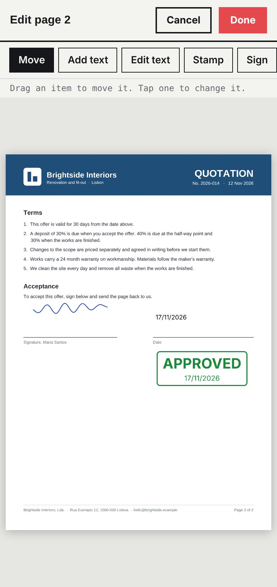

Drop in PDFs and photos, move the pages, fix a line of text, add a stamp or a signature, save one PDF. Everything happens in your browser, so nothing is uploaded anywhere.
No account, no settings to learn. Pages are cards you can move, turn and tick.
Pick PDFs and photos, or drop a whole batch on the page. Every page becomes a card.
Drag pages or use the arrows. Rotate, delete, or tap ✎ to edit a page.
One PDF with everything, only the selected pages, or each page as a file in a ZIP.
A contract, a scanned page and three site photos can end up in one file.
Each PDF page and each photo is one card. Photos are placed on their own page.
Save everything as one PDF, only the ticked pages, or split into single-page files.
Tap ✎ on any page. Fill in a form, sign a quote, mark an invoice as paid.
Type anywhere on the page. Bold, any colour. Latin, Cyrillic and Greek all work.
Tap a line of the page and change it. New text is set in Inter, so it can look a little different from the original.
APPROVED, PAID, DRAFT, or your own words, with today's date if you like.
Draw it with a finger or a mouse. The page remembers the last one in your browser.
Cover an area, or cut the page down to what you want to keep. Undo is there when you slip.
Tick it and the page is flattened. The old text underneath is really gone, but the page is no longer selectable text.

Settings that apply when you save.
Smaller and Smallest turn pages into images, so the file shrinks and quality drops a little.
Number every page, or put a light diagonal word across them.
Fillable fields are listed in one place. Fill them, and the form is flattened into the page.
Enter the password to open the file. Its pages are saved as images.
The parts behind the buttons.
The page reads and writes the files itself. There is no server, so nothing is uploaded.
Thumbnails come from pdf.js, saving from pdf-lib, added text is set in Inter. All of it is bundled in the repository, with the licences.
A small CLI does merge, extract, split, rotate, images and info.
$ python pdftool.py merge a.pdf b.pdf -o all.pdf
No. The page does all the work on your device. There is no server that receives them.
Nothing. No account, no ads. The code is open under the MIT licence.
PDF pages are copied as they are. Photos are embedded as images, so very large photos make a large file. Shrink them first if size matters.
Not by default. Changed text and white-out boxes are drawn on top, and the original can still be copied. Tick "Save this page as an image" in the editor to flatten the page and really remove it.
Yes. Options, then Smaller or Smallest. Every page becomes an image, so text can no longer be selected.
Yes. HEIC photos from an iPhone are accepted. Switch on "Make scans searchable" in Options and a scan gets an invisible text layer, so you can search and select it. English, Portuguese, Russian and Ukrainian. It runs on your device.